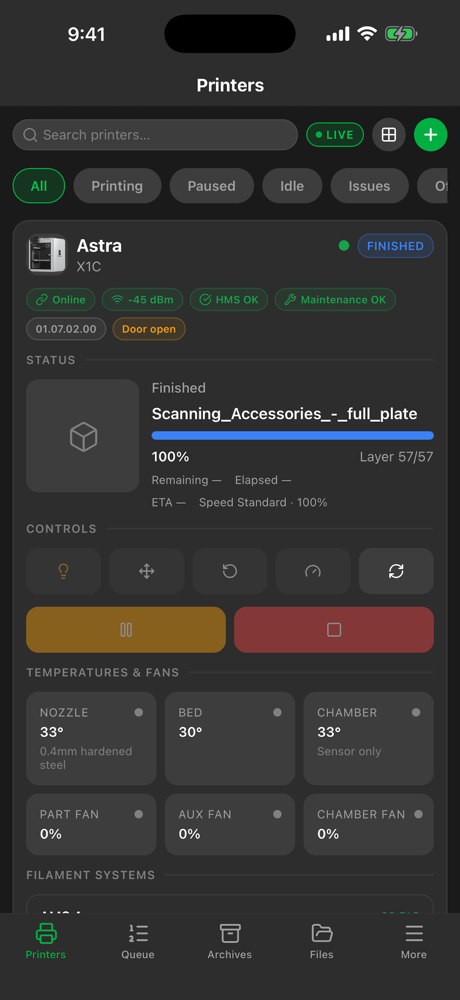
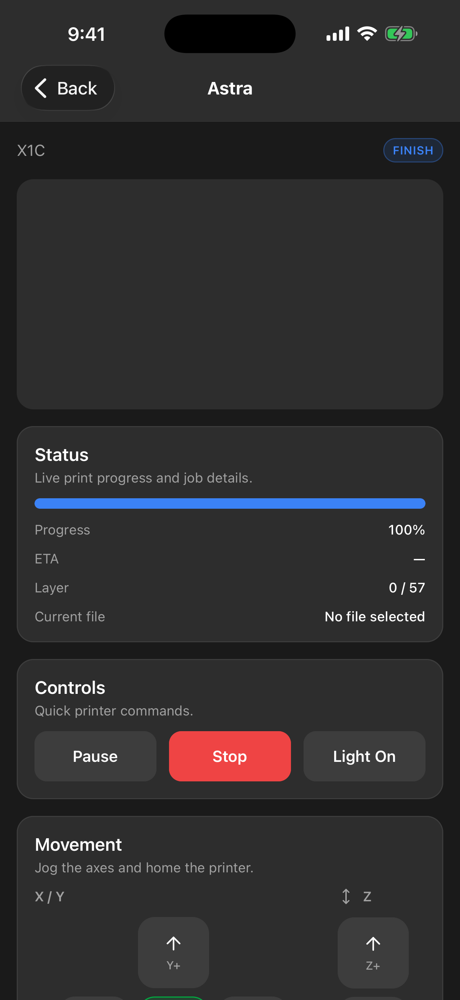
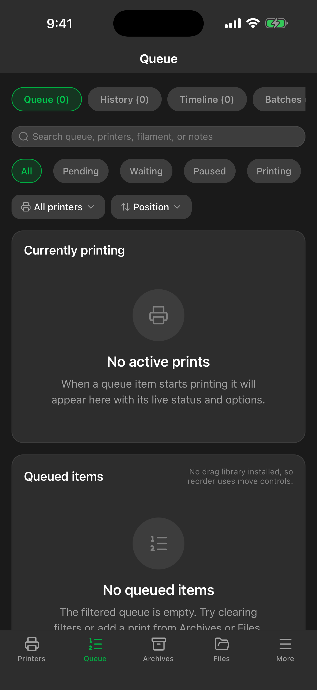
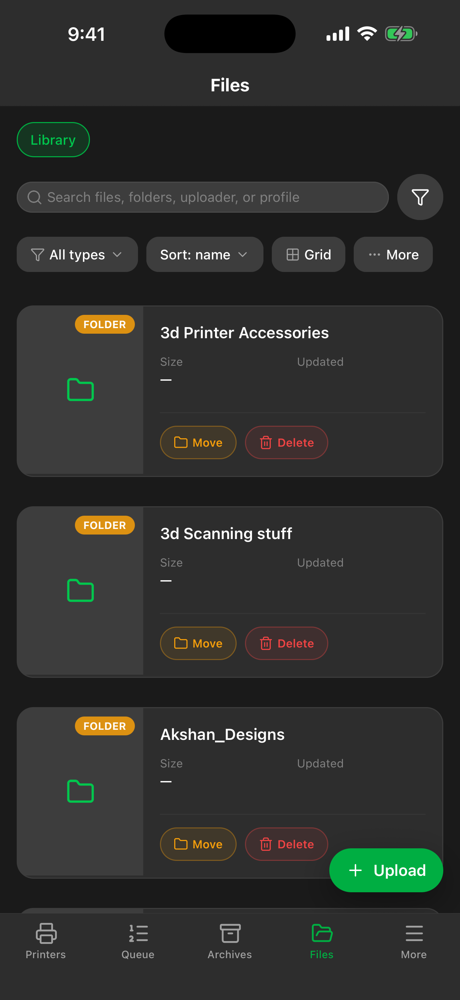
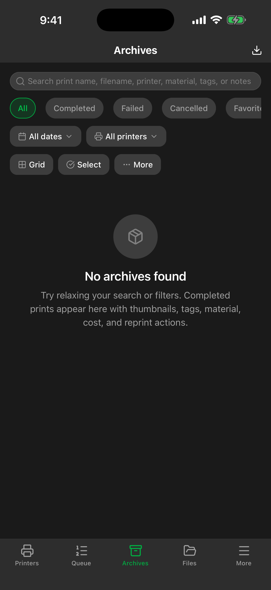

Monitor printers, manage queues, browse files, and control your entire Bambu Lab fleet — all from your phone or tablet.





See every printer at a glance — status, progress, temperatures, and active filament. Filter by state, search by name.
Queue jobs across your fleet with priority, ordering, and batch grouping. Retry, reorder, or cancel from anywhere.
Browse, upload, and organize 3MF/STL files. Folder support, search, and one-tap print from your library.
Pause, resume, stop, adjust speed, toggle the chamber light, home axes, calibrate — all the controls from the web UI.
View the live camera feed from any printer. Check first layers and monitor prints without leaving the couch.
Track spools, remaining filament, colors, and storage locations. NFC tag scanning for quick spool identification.
Print history, success rates, usage statistics, and archived job details with full metadata.
Log maintenance tasks, track intervals, and get reminders so your printers stay in top shape.
Organize related files and prints into projects. Track progress across multi-part builds.
Bambuddy Companion connects to your self-hosted Bambuddy instance. It's the mobile client for the Bambuddy print farm management platform — not a standalone app.